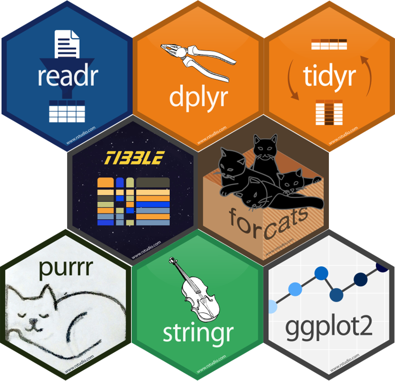
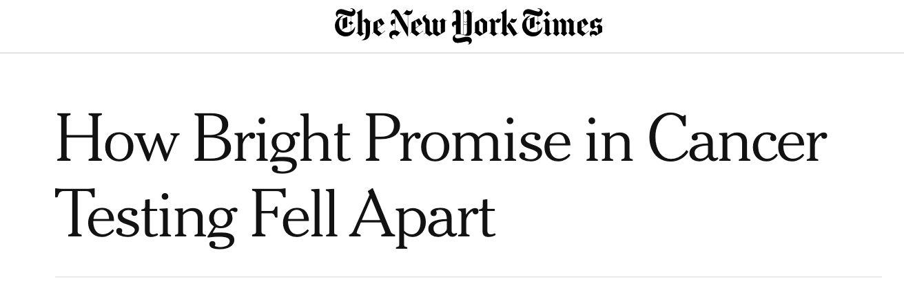
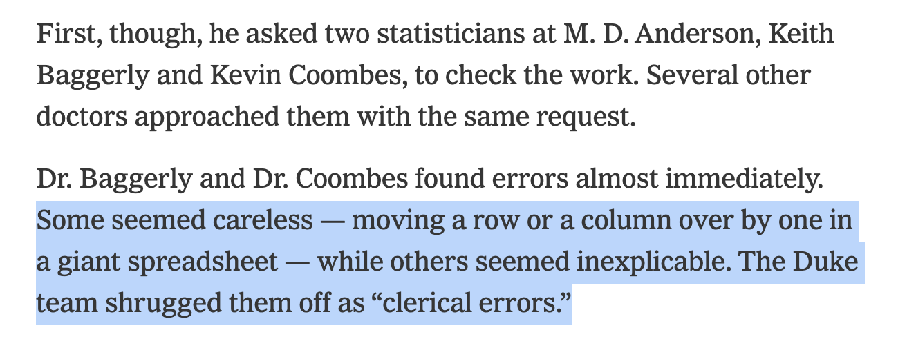
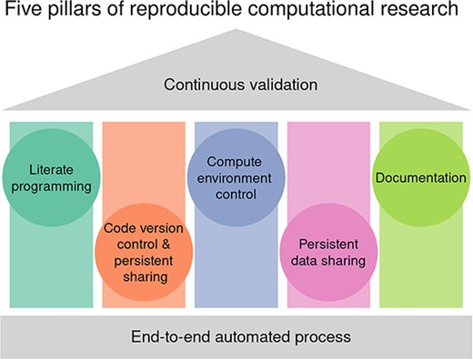
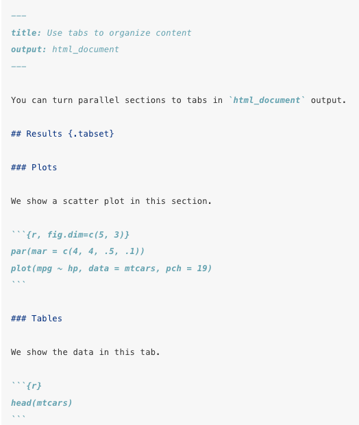
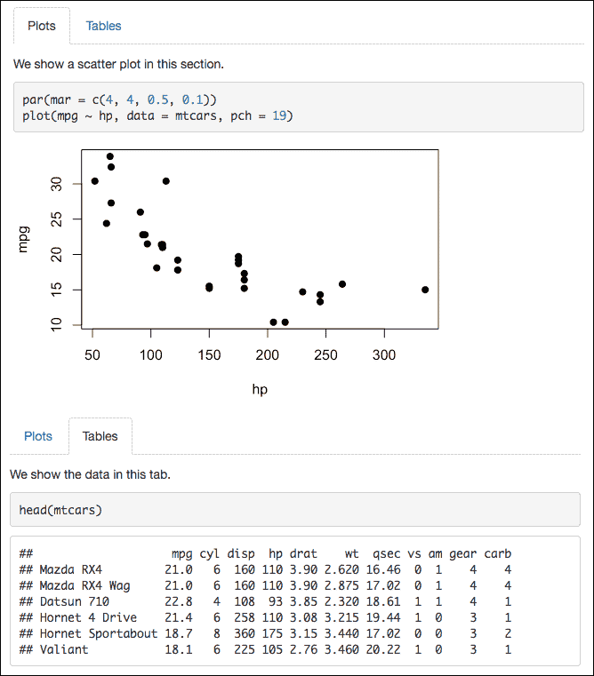
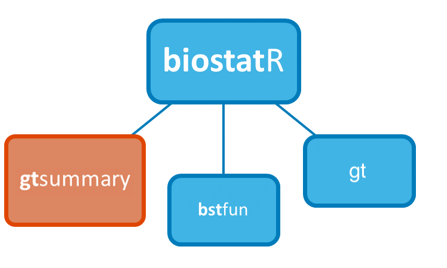
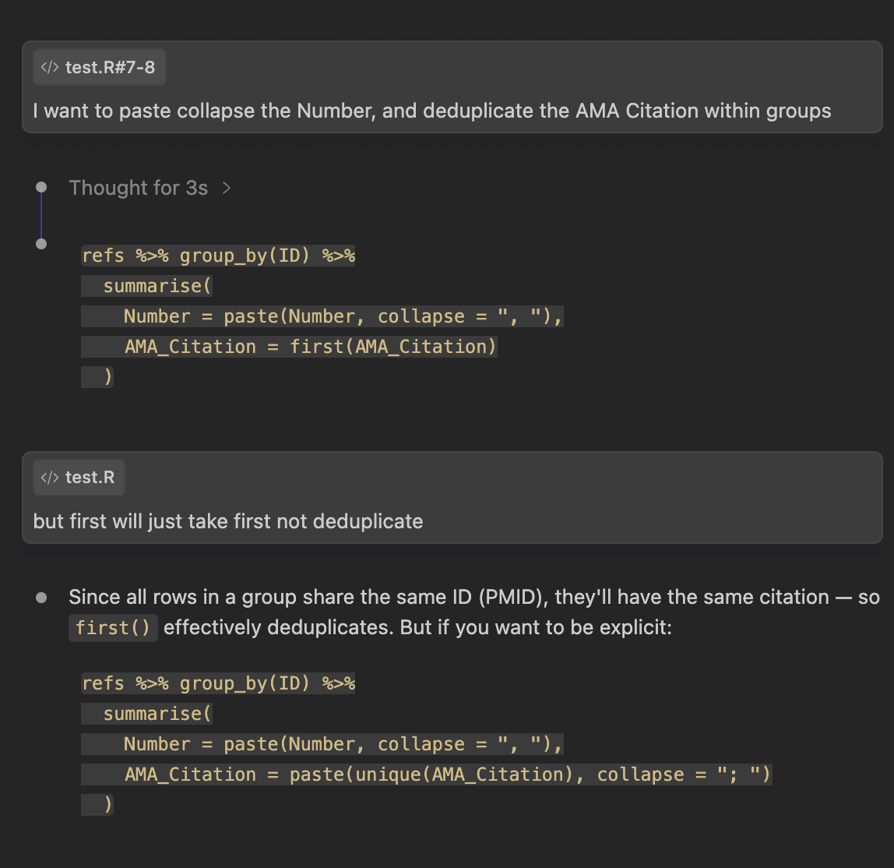

Computational Reproducibility
Karissa Whiting
June 1st, 2026
Summer Training Series
Memorial Sloan Kettering

A data analysis is reproducible if all the information (data, files, etc.) needed to compute results is available for someone else to re-do your entire analysis and get the same results.
All data processing steps from raw data to cleaned data are available and documented
All analysis decisions made are documented and available in code
Results don’t depend on your specific computational environment (e.g. no hard coded file paths, seeds set for stochastic computations)
Allows you to show evidence of your results
Encourages transparency about decisions made during analysis
Enables others to check and use/extend your methods and results
Enables FUTURE YOU to check and use/extend your methods and results
Dr. Mark Holder, Computational Biologist
Dangers of writing code that is hard to double-check or confirm:


Increasingly, journals and funders require code to be submitted. You may be asked to provide your cleaned analysis data (and possibly code) at time of publication.
| Journal / Publisher | Requirement |
|---|---|
| NIH | As of Jan 2023, all grants require a Data Management Plan; sharing of data and code may be required at publication or grant end. |
| The BMJ | Submissions ≥ May 2024: code used to analyze data must be submitted |
| PLOS Biology/Medicine | Submissions ≥ Jan 2026: author-generated code directly related to findings must be available publicly |
| Nature / Springer Nature | Code Availability Statement required; sharing is a condition of publication |
Tip
Requirements vary by journal, article type, and whether code is essential to reproduce findings. Even when not required, sharing code is increasingly expected.

Compute Environment Control
~/Users/Whiting/Projects...)Code Version Control
Documentation
README.mdData Integrity - more details later
Literate Programming
The goal is to set yourself up with a project that is easy to navigate & self-explanatory without needing to hold everything in your head
🔮✨ A little upfront effort in organizing your code and files will save you an enormous amount of time and frustration later
📁 my-project/
├── 📁 raw-data/
├── 📁 data/
├── 📁 scripts/
│ ├── 📄 01-clean.R
│ └── 📄 02-analysis.R
├── 📁 outputs/
├── 📁 admin/
├── 📄 README.md
└── 📄 my-project.RprojKeep raw and processed data separate (raw-data vs. data)
Folder for scripts, ordered or labelled descriptively
Optionally have admin for project notes and outputs for final reports and figures
README — text file that introduces and explains a project (usethis::use_readme_md())
R Project (.Rproj file) — tells RStudio all your files belong to one project and sets the working directory for the entire project
Make it easy for others (and future you) to re-run your code on any machine
Isolate package versions per project so code runs the same everywhere
Python — venv or conda:
R — renv:
You can commit & track renv.lock / requirements.txt / environment.yml
Hard-coded paths break on every other machine:
here::here() (R) and pyprojroot.here() (Python) find the project root automaticallyGit is version control software that runs locally on your computer
GitHub is a cloud platform for hosting Git repositories
Tip
Think of Git as “track changes” for your entire project, and GitHub as Google Drive — but for code and those documented changes
GitHub
GitHub Enterprise (MSK)
.gitignore Before Your First CommitWarning
Deleting a file does not remove it from Git history. If PHI or sensitive data is ever committed, it is a violation — even if you delete it in the next commit.
A .gitignore file tells git which files to NOT track. Set it up before you commit anything.
ßUse usethis::use_git_ignore() in R or GitHub’s gitignore templates to get started quickly (but check where data resides and add as needed)
.gitignore Example# Data — never commit raw or sensitive data
data/
raw-data/
*.csv
*.xlsx
# Credentials and config
.env
*.key
# R-specific
.Rhistory
.RData
.Rproj.user/
# Python virtual environment (use requirements.txt instead)
.venv/
venv/
# Compiled bytecode
__pycache__/
*.pyc
# Jupyter notebook checkpoints
.ipynb_checkpoints/
# OS clutter
.DS_StoreWrite the plan before you write the code
Why it matters:
What to include:
Avoid ‘by hand’ steps used in the analysis
Don’t clean by hand in Excel. All analysis steps should be done in code and saved in scripts. If any ‘non-scriptable’ steps are unavoidable, document those steps very clearly.
Write code comments and maintain a good README
Consider efficiency / readibility trade-off
DNR (Do Not Repeat) - if you do it more than 3 times, consider writing a function
Use reproducible reporting practices for analyses (e.g. Rmd, quarto, Jupyter notebook, inline text stats)
📁 my-project/
├── 📁 raw-data/
├── 📁 data/
├── 📁 scripts/
│ ├── 📄 01-clean.R
│ └── 📄 02-analysis.R
├── 📁 outputs/
├── 📁 admin/
├── 📄 README.md
└── 📄 my-project.RprojR Markdown, Quarto and Jupyter are tools for integrating code and narrative text into a single executable document
Can be rendered into various output formats (HTML, PDF, Word, and slides)
Detailed code and data analysis steps are included in one document, encouraging transparency and providing a complete record of the research process
Documents automatically update when data or code changes, reducing errors and maintaining consistency.
Version-control compatible
Quarto (.qmd)
Jupyter (.ipynb)
Tip
The hidden risk of ipynb: Jupyter lets you run cells out of order. Results can depend on state you forgot you created earlier. The notebook looks coherent, but a fresh top-to-bottom run may not reproduce the same story. Quarto rendering enforces clean execution and exposes that quickly.
Sometimes you need to draw attention to something in your report. You can do this using {.callout-note}
::: {.callout-note}
Note that there are five types of callouts, including:
`note`, `warning`, `important`, `tip`, and `caution`.
:::Note
Note that there are five types of callouts, including: note, warning, important, tip, and caution.
::: {.callout-warning}
Here is an example of a warning
:::Warning
Here is an example of a warning


{gtsummary} - Tools to create publication-ready analytical and summary tables using the R programming language.
Summarizes data sets, regression models, and more, using sensible defaults with highly customizable capabilities.

| Characteristic | N = 2001 |
|---|---|
| Age | 47 (38, 57) |
| Unknown | 11 |
| Grade | |
| I | 68 (34%) |
| II | 68 (34%) |
| III | 64 (32%) |
| Tumor Response | 61 (32%) |
| Unknown | 7 |
| 1 Median (Q1, Q3); n (%) | |
Four types of summaries: continuous, continuous2, categorical, and dichotomous
Variables coded 0/1, TRUE/FALSE, Yes/No treated as dichotomous
Statistics are median (IQR) for continuous, n (%) for categorical/dichotomous
Lists NA values under “Unknown”
Label attributes are printed automatically
formula argument is powerful! You can adjust for variables, or pass mixed model formats (e.g. "{y} ~ {x} + (1 | gear)")
Additionally, add_global_p() can be useful
Themes control many aspects of how a table is printed. Function defaults can be controlled with themes, as well as other aspects that are not modifiable with function arguments.
The {gtsummary} package comes with a few themes, and we welcome user-contributed themes as well!
Most commonly used theme: gtsummary::theme_gtsummary_compact()
More info: https://www.danieldsjoberg.com/gtsummary/articles/themes.html
Many more customization available!
See the documentation at http://www.danieldsjoberg.com/gtsummary/reference/index.html
And a detailed tbl_summary() vignette at http://www.danieldsjoberg.com/gtsummary/articles/tbl_summary.html
Tables are important, but we often need to report results in-line in a report.
Any statistic reported in a {gtsummary} table can be extracted and reported in-line in an R Markdown document with the inline_text() function.
The pattern of what is reported can be modified with the pattern = argument.
Default is pattern = "{estimate} ({conf.level*100}% CI {conf.low}, {conf.high}; {p.value})"
| Characteristic | N | OR | 95% CI | p-value |
|---|---|---|---|---|
| Chemotherapy Treatment | 193 | |||
| Drug A | — | — | ||
| Drug B | 1.21 | 0.66, 2.24 | 0.5 | |
| Age | 183 | 1.02 | 1.00, 1.04 | 0.10 |
| Grade | 193 | |||
| I | — | — | ||
| II | 0.95 | 0.45, 2.00 | 0.9 | |
| III | 1.10 | 0.52, 2.29 | 0.8 | |
| Abbreviations: CI = Confidence Interval, OR = Odds Ratio | ||||
In Code: The odds ratio for age is ‘inline_text(tbl_uvreg, variable = age)’
In Report: The odds ratio for age is 1.02 (95% CI 1.00, 1.04; p=0.10)
[1] 10
[1] Mon Levels: Sun < Mon < Tue < Wed < Thu < Fri < Sat
[1] Fri Levels: Sun < Mon < Tue < Wed < Thu < Fri < Sat
How data versions are managed is still highly depending on what service and data types you work with
For genomic or imaging data, try to use a standardized pipeline
For clinical data, try to establish a workflow with your collaborators.
Avoid making changes to excel yourself
Use the README to track
Pros
Cons
Warning
MSK policy: Use only approved institutional tools. These are currently web & browser based only.
Know your data. AI cannot catch errors it doesn’t know to look for.
❌ Don’t : Let an LLM take over QA. Don’t let it write code on unchecked variables.
✅ Do : Check variable types and levels, missingness, and ranges yourself before handing off to an AI tool. Make sure you understand every variable needed to execute the analysis plan

❌ Don’t : Let an LLM write a statistical plan for you.
✅ Do : Let an LLM clean up and format a statistical plan you’ve already written. Ask it to review it for gaps or inconsistencies, but make sure you understand and can defend every decision in the plan yourself.
❌ Don’t : Let an LLM pick the most appropriate statistical test or models for your analysis.
✅ Do: Get help with syntax, but make the decisions yourself. If you don’t understand why a test or model is appropriate for your data and question, see if the LLM can help explain it to you in simple terms (I’ve had varying success with this last point).
❌ Don’t : Tell an LLM to produce a figure based on a dataset you input.
✅ Do : Provide context on the structure of your data (which variables you want to use), and the specifications of the plot you would like to make. Then, ask it to generate readable and well-commented code to produce the plot, and explain the code to you line by line.
❌ Vague prompt:
“Here is my dataset. Make a survival curve.”
✅ Specific prompt:
“I have a data frame trial with: ttdeath (time to death in months), death (1 = event, 0 = censored), trt (‘Drug A’ / ‘Drug B’). Using {survival} and {ggsurvfit}, write well-commented R code to plot Kaplan-Meier curves by treatment group with a risk table. Then explain each step.”
❌ Don’t : Let AI take over your codebase without understanding and verifying every line of code it produces.
✅ Do : Use AI to scaffold, debug, and explain code. Use it to help organize, functionalize and modularize your code (eg. helping with the ‘do not repeat 3 times’ rule)
Warning
You are still responsible for understanding and maintaining this codebase. Stay in control — treat AI suggestions like code review, not ground truth.
Ask AI to review your code systematically — bugs, performance, and structure all at once
Tip
Prompt: “Review this pipeline for bugs, efficiency and parameter consistency across scripts. Suggest areas to speed up the code. List findings by priority and suggest specific fixes with file and line references.”
# Pipeline Review: run-pipeline.R and Related Scripts
## Findings
### Bugs / Errors
- Sequential bootstrap loop — parallel cluster is set up but never used
Fix: Replace `for` loop in `run_bootstrap()` with `foreach %dopar%`
- `prep-data.R` uses hardcoded parameters duplicated from `run-pipeline.R`
Fix: Source shared parameters from a single config file
- Pipeline assumes `data/model-data.RData` exists — fails with cryptic error if missing
Fix: Check if file exists; source `prep-data.R` first if not
- Potential syntax bug in `preprocess-functions.R` line ~57: `[, , drop = FALSE]`
Fix: Verify intent and replace with proper indexing
### Performance Improvements
1. Parallelize the bootstrap loop (biggest gain) — swap `for` → `foreach %dopar%`
2. Batch file writes — collect rows during loop, write once at the end
3. Replace `do.call(cbind, ...)` with `dplyr::bind_cols()` — faster for wide data
### Verification Plan
- Run local mode with NBOOT=5, confirm no errors end-to-end
- Confirm parallelized and sequential bootstrap give same AUC distributions (same seed)
- Unit test the indexing fix on a small data sliceQuestions?